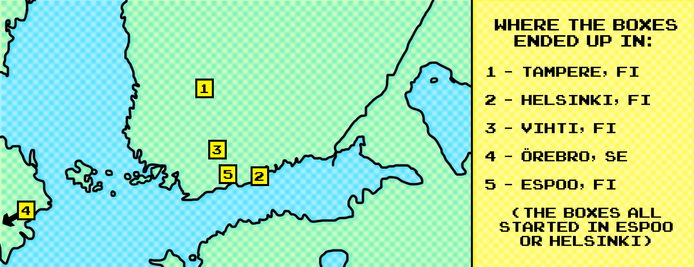

üîó Trust Box (Gallery): https://heya.world/trust_box


Each Trust Box consisted of a diposable camera (with 27 exposures), 2 instruction booklets (one in English, one in Finnish), and a logbook where participants can share their name, location, and why they trust the next person in the chain.
Introduction
What does trust look like?
Trust is not something easily visualized. It doesn't even have a universally recognized symbol. Yet it is so important for the well-being of individuals and the fabric of communities. Imagine a world without trust. What kind of society would we build? What kind of relationships could we keep? And what kind of hopes would we have to live on? In this project, I use five sets of disposable cameras as a tool to explore what trust might look like in Finland.
The project draws loose inspiration from “six degrees of separation” theory that all people are six or fewer social connections apart. One of the early conceptions of this theory was Stanley Milgram’s 1967 “small world” experiment that aimed to find the average social distance between two people. In the study, participants in the United States were asked to send a letter through their personal network to reach a target person in another city. While some chains were completed, most failed: in one case, 232 out of 296 never reached the destination. However, out of the 64 letters that did reach the target city, the average path length fell around five and a half or six, leading to the theory’s enduring appeal.
With Trust Box, I wanted to create a smilier chain, but one based not just on random connection, but on trust. Thus, I decided to ask each participant to choose someone they trust to be the next link. I was curious what the result would be. Would people continue something simply because they were entrusted to do so? Could the act of being passed something tangible—a camera in a box—carry enough emotional weight to inspire participation? By relying on a fragile, analog tool and giving out prompts like “take a photo that represents why you trust the next person,” the project became both a social experiment powered by trust and a visual archive of the relationships that sustain it.
This project was created during and funded by Aalto University’s Art + Media Studio (Interactive and Participatory Art).
Note about Finland
As probably not all the readers are familiar with Finland -- the country I'm currently based in -- and since this is a site-specific art, I would like to share some context about the location.
Finland is often considered one of the most honest and reliable countries in the world. In a "lost wallet" experiment conducted by Reader’s Digest, Helsinki ranked as the most honest city, with 11 out of 12 wallets returned. This aligned with my own experience as well. I once accidentally left my phone on the metro, and it was so promptly and kindly returned to me in the next 30 minutes.
But at the same time, Finland struggles with loneliness; it consistently ranks among the top in Europe for social isolation. According to a 2025 report by the Finnish Red Cross, 59% of people in Finland feel lonely at least occasionally, and one in four have been feeling lonely for over five years. When I asked my Finnish friends about this, they also confirmed that social isolation is a big issue in Finland and there is a need for more grassroot communities.
I thought it would be interesting to work on this project in Finland because it has both a high level of public trust (which means probably I will be able to retrieve some of the boxes safely) while also needing more intimate in-person communities and interactions (perhaps this project can start interesting and intimate dialogues for some?).
The Process


Left: Process of making the trust box; Right: All the instruction booklets and logbooks.
Here’s how it went: I bought 5 disposable cameras and put each in a small mail box labeled “Trust Box.” Along with a camera, I included two copies of an instruction booklet (in English and Finnish) and a logbook in each box.
I gave each Trust Box to someone I personally trust. I asked each of them to take three photos — one about the person who gave them the box, one about themselves, and one about the person they would pass it on to. Then, as the instructions suggested, I asked them to sign the logbook and hand the box in person to someone they trust.
Each camera can hold 27 exposures, meaning it would ideally pass through nine people total, connected by a chain of trust.

The 5 people whom I personally handed the box to.
Of course, there were risks. At any point in the chain, a camera could be lost, forgotten, or rejected. While I trusted the person I gave the camera to — and maybe even the person they would pass it to — how could I be sure about the fourth, fifth, or ninth person in line? They would be complete strangers to me. I couldn’t imagine what they look like, so how can I say I really trust them?
But still, the participants are not truly random strangers. Each was chosen by someone. In this way, I am connected to the final participant through an intimate, intentional thread built entirely on trust. So, despite my trust issues and anxieties, I chose to follow through. After all, I had already bought the materials and built the boxes. And even if this experiment fails, I would still have learned something.
Instructions

Some pages from the instruction booklets (English version).
The Results

Photo #16 from Trust Box #1. Thank you to the stranger who took this amazing photo and to the fantastic model as well.
The results were both unexpected and heartwarming. Out of the five boxes I distributed, four were completed within a matter of weeks. The final participants in each chain reached out to me (using the contact info I left in the box), and I was able to retrieve the boxes in person. And I’d have to say, meeting each of them was deeply rewarding.
Each “last person” in the chain was unique: one was a bachelor’s student in Espoo; another, a human rights NGO worker in East Helsinki; third was a father in a family of eight living in Vihti (I picked up the box from his brother, due to distance); and the last one was a midwife in Tampere, just heading into her first night shift. All of them, in their own way, were so kind, genuine, and supportive. My conversations with each of them, albeit short, felt so special and moving.
Dare I even say, this project restored a bit of my faith in humanity.
Once I retrieved the 4 boxes, I got them developed, printed, and scanned at Fotoyks Kamppi. It was exciting to wait for the development to complete. Although I have to admit, I was nervous not knowing what the photos were going to look like. I guess this is the beauty of a film camera–the element of risk and waiting.
I was so delighted to see the results. It was interesting to follow the journey of each camera through the lens of others. Even the a bit dark and underexposed were charming, and random objects in the photos sparked my curiosity. What could these photos be about? Without knowing any details other than notes left in the logbooks, my mind naturally imagined a story for each photo. I liked that most photos remain a mystery to me, so I didn’t probe further.
The resulting photos that you can see here are snapshots of daily life across Finland. Individually, or without context, they might look quite random or insignificant. But taken together, they form an emergent, communal archive of trust. The scanned logbooks (which includes handwritten notes of why each person trusts the next person in the chain) add another layer of meaning to the archive.
Update: I just heard back that the one missing box (Box #4) is completed as well. Would you believe me if I said it ended up in Sweden, and the last person in that chain was a two-and-half year old baby? The photos from this box will be developed and uploaded to be included in the gallery as well.
Where each of the 5 Trust Boxes ended up in: Tampere, Helsinki, Vihti, Gothenberg, and Espoo.
Highlights
Here are just a few highlights from each box. But the rest are really interesting too. To see all the photos and logbooks, be sure to check out the trust box gallery here.
Box 1 (Espoo → Tampere)
I really enjoyed reading the logbook from this box. There were some creative answers that included fun sketches and imageries.
Logbook scans of person 2, 3, and 6. "Exquisite mustache" is a great reason to trust someone.


Very cool portraits taken in Tampere, from Trust Box #2.
Box 2 (Espoo → Helsinki)
Seeing these logbook notes in Finnish made me excited me because (1) I've been learning Finnish and it makes me happy to see some in this project, (2) it made me realize that the box reached outside of my international bubble, and (3) it confirmed that it was worthwhile to include instructions in Finnish.

Logbook scans of person 6, 7, and 8. These were the only logs written in Finnish out of the 5 Trust Boxes.


Mysterious photos from this box. My mind starts to form a story seeing these photos without context.
Box 3 (Helsinki → Vihti)
Box 3 must be full of athletic people.


Left: an exterior of a climbing gym; Right: some kind of running event?


Left: squash practice room; Right: a badminton racquet plus an 2009 Olympics hoodie
Box 4 (Helsinki → Gothenburg, Sweden?)
Well, this one is yet to be developed. But the fact that 2.5 year old baby in Sweden was part of the chain is exciting.
Box 5 (Helsinki → Espoo)
I was delighted to see that the photos that look like "duplicates" were actually two separate photos taken two consecutive people in the chain. (I was able to confirm this by messaging / talking to these people in the chain.)


Person #3's last photo and person #4's first photo. This must be a special place for their relationship.


Person #6's last photo and person #7's first photo. At first glance, I thought these were the same photos -- one with a flash and one without. However, at a closer look, I can see that these are two copies of the same photograph (and frame) in two different rooms.
On Participatory Art
What is Participatory Art?
Participatory art is a form of contemporary art where the audience becomes a crucial part of the art-making itself. In fact, in participatory art, the boundary between the artist and the audience is blurred as the audience acts as co-artists rather than passive viewers. According to Cunningham and Flinders, the process of participatory arts flows a “bottom-up” and democratic approach to the creative process, inviting participants to shape the message rather than delivering a fixed and “elite” message to a “passive” audience.
Historically, participatory art is connected to early 20th-century movements like Futurism and Dadaism while its contemporary roots lie in the movements like Fluxus. It also has relations to the participatory politics of feminism and the civil rights movements of the 1960s (source: Participedia). Artists such as Allan Kaprow, with his Happenings (1950s and 1960s) and Augusto Boal, through his Theatre of the Oppressed (1970s-), helped shape the foundations for participatory art. Today, this genre of art overlaps with socially engaged art, new genre public art, and relational aesthetics. More recent examples of contemporary participatory art includes Jeremey Deller’s The Battle of Orgreave (2001), Kateřina Šedá’s There's Nothing There (2003), and Miranda July & Harrell Fletcher's Learning to Love You More (2002–2009).
Trust Box as Participatory Art
In Trust Box, the 40 participants who chose to trust me and share snippets of their life became my collaborators. Not only did they become co-photographers, they also were co-writers who shared their reflections on “trust” in addition to being co-curators, choosing the next participant in the chain. That’s why the resulting photographs and notes were a total surprise to me. I really had no idea what kind of images would be developed, what insights would emerge, and who would end up becoming part of the chain.
Even the conversations sparked by the box handoffs became part of the artwork. For example, several participants shared with me how they were touched to be appointed as the “trusted one”, and how this gesture opened up unexpected moments of connection and dialogue. I experienced this myself when I handed the Trust Box to someone I wasn’t very close with (although, somehow, I still trusted him with my instincts). That encounter led to an honest and intimate conversation between us, and we got to exchange our life stories. It showed me that trust can create the conditions for not only collaboration but also vulnerability and genuine connection.
What’s Next?
I plan to continue exploring the theme of trust. My next project is Trust Café, a temporary café set up in an abandoned shopping mall in Imatra, Finland. I will put a small table in its car park, surround the table with shelves, brew coffee and tea, and invite strangers into conversations about trust. It will involve a new chain of interactions and generate another form of visual artifact (likely in the form of using clay sculptures). Like the Trust Box project, I’m getting a kick of nervousness and excitement at the same time.
Acknowledgements
Special thanks to artist Oliver Kochta-Kalleinen for his mentorship and encouragement throughout this project, and for introducing me to the wonderful (and scary) world of participatory art.
And of course, big shout out to the participants for trusting me and becoming the co-artists for this project.
Thank you to:
Markku,
Voth,
Jeke,
Samu,
Niko,
Joonas,
Jesse,
Soikku,
Albert Figurt,
Andrzej Tarasiuk,
Kate Ballinger,
Jason Jackson,
Aarni,
Elina,
Aino,
Antti,
Ana,
Kelly,
Greta,
Ilia,
Chris,
Aawez,
Saku